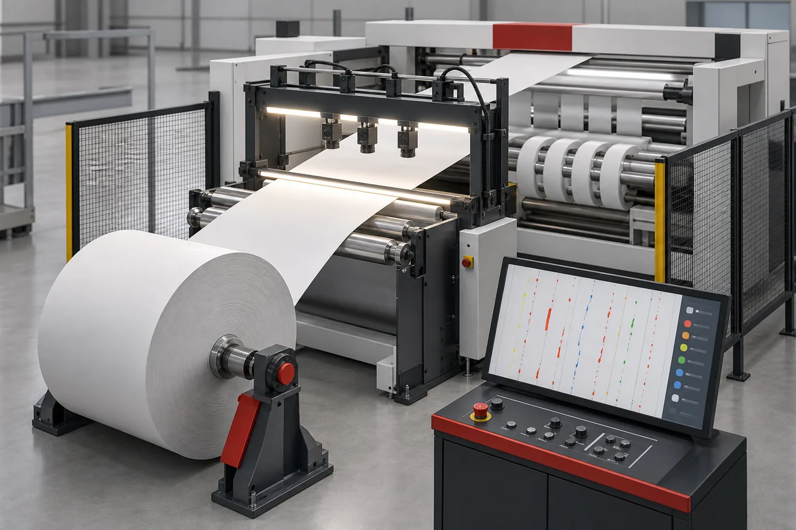

Published July 19, 2026 | By HDPTH Technical Editorial Team

For overseas buyers, inspection is not only a camera question. It is a machine specification question. A camera or monitor can only perform well if the web path is stable, the inspection point is accessible, the lighting is protected from dust and glare, and the operator has a clear method for responding to the defects that matter.
Gemini's draft for this article framed the slitter rewinder as a final quality gate. That is the correct buyer question, but it needs careful wording: the slitter rewinder may be the last converting step before finished rolls ship, so it is often the practical place to verify incoming web defects, slit-edge condition, dust problems, coating marks, holes, spots, wrinkles, scratches or lane-specific issues. Whether the inspection system only helps operators see those problems or also creates digital defect records depends on the selected inspection package.
Inspection terms buyers should separate
Suppliers may use words like inspection, monitoring, camera system, defect detection and vision system in different ways. Before comparing quotations, define the functional level you actually need. A basic system for watching web behavior is not the same as a web inspection system that classifies defects and exports roll reports.
| Inspection option | Main purpose | What buyers should confirm |
|---|---|---|
| Strobe monitoring | Helps operators visually freeze a moving web pattern or surface area. | Lighting position, operator viewing point, safe access and whether records are required. |
| Video web monitoring | Shows selected web zones such as slit edges, trim paths, print marks or web tracking. | Camera location, field of view, screen position, image capture needs and maintenance access. |
| Camera-based web inspection | Detects and logs defined surface or structural defects according to the inspection supplier's capability. | Defect types, material optics, lighting method, data output, alarm logic and acceptance test method. |
| Stop-at-defect workflow | Uses defect position information to help bring suspect material to an operator-accessible point. | Encoder signal, machine control interface, stopping method, splice table access and repeatable FAT proof. |
When inspection belongs on a slitter rewinder
Not every slitting line needs advanced inspection. A converter running low-risk material, wide tolerances and long internal-use rolls may only need normal operator checks and roll inspection. Inspection becomes more valuable when defects are costly to discover after shipment, when customers request roll records, or when high running speed makes visual monitoring unreliable.
Common triggers include medical or hygiene nonwovens where holes and contamination are important, PE film or laminates where gels and scratches can affect downstream printing or sealing, paper and specialty webs where coating marks or edge damage must be found, and multi-lane slitting where one defect may affect only certain finished rolls. Buyers should define defects by business impact, not by a generic wish to "find everything."
HDPTH's public product pages show that its converting projects are configured around material, width, speed, knife system, winding method, controls and layout. That same project-based logic should apply to inspection. Review the slitting and rewinding lines page and the high-speed slitting machines page when deciding where inspection hardware could physically fit into the line.
Upstream or downstream of the knives?
Gemini's draft highlighted a key layout decision: inspection before or after the slitting section. Upstream inspection checks the master web before it is divided into lanes. This is often simpler for finding incoming material flaws because one inspection span sees the full width. It can also provide a cleaner reference before knife dust, trim removal or lane separation changes the web behavior.
Downstream monitoring can be useful when the buyer wants to observe slit edges, lane tracking, ribbon separation, trim removal or knife-related symptoms. It may need more careful framing because the web has already been divided into lanes. Some projects may justify both an upstream inspection position and a downstream video monitoring point, but that decision should be based on real defect risk and plant workflow, not on feature lists.
Material behavior drives the inspection method
Web inspection suppliers discuss different lighting and camera approaches because materials behave differently under light. Porous nonwovens, paper, transparent film, opaque film and coated laminates do not produce the same optical signal. Dust, static charge, web flutter, reflective surfaces and edge weave can all affect whether a camera sees a true defect or a process artifact.
For nonwovens, buyers may care about holes, thin areas, oil spots, fiber clumps, contamination or edge damage. For paper, coating marks, holes, tears, creases and dirt may be the main concerns. For PE film and flexible materials, scratches, gels, pinholes, inclusions or haze changes may matter. The inspection supplier should confirm what the selected hardware can realistically detect on the buyer's samples, while the machine builder should confirm that the line layout supports stable web presentation.
This topic connects with HDPTH's existing guide on slitter rewinder roll defects, but the purpose is different. Roll-defect troubleshooting looks at symptoms after the roll is produced. Inspection-system specification asks how the machine should be designed so those defects can be observed, logged or removed during converting.
Machine integration points to define early
A buyer should not leave inspection integration until after the mechanical line is designed. Camera bridges, light boxes, monitors, operator workstations, splice tables, cable routing and control interfaces all need physical space. If those items are added late, the project can lose maintainability or require awkward web routing.
The inspection zone should have a stable web span. Tension control, web guiding, roller alignment and vibration control matter because a moving camera image depends on a consistent web plane. If the material flutters, wanders or changes tension through the inspection point, the image can blur or the defect location can shift. For background on web stability, see HDPTH's guide to automatic tension control and web guiding.
Dust and static also deserve attention. Converting paper, wood-pulp composites or dry nonwovens can create particles that settle on lenses and light covers. Static can attract contamination toward the web and inspection area. Buyers should ask whether dust extraction, enclosed optical areas, cleaning access or static-control points need to be coordinated with the inspection supplier.
Planning an inspection-ready slitting line?
Send your material, width range, target speed, defect concerns, preferred inspection location and workflow requirements through the HDPTH inquiry page. HDPTH can review the converting line layout before quotation.
Request Layout ReviewDefect handling: log, mark, slow, stop or remove?
The most important practical question is what happens after a defect is detected. Some plants only need a visual record. Others need an alarm, a defect map, a printed roll report, a label or mark near the defect, a slow-down sequence, or a stop-at-defect workflow that brings the suspect section to a splice table. These are different automation scopes.
In a stop-at-defect concept, the inspection package identifies a defect position and the machine control system uses line length information to stop the web near an accessible point. This is not something buyers should assume from the word "inspection." It requires defined signals, a suitable web path, controlled deceleration, operator access and testable acceptance criteria. If the buyer wants defect removal, the machine also needs a clear splicing or reject-handling procedure.
For multi-lane slitting, ask how defect information is assigned to finished rolls. A master-web defect may affect only one slit lane. A downstream edge defect may affect one roll position. The RFQ should state whether the buyer needs roll-by-roll reporting, lane assignment, data export, printed labels or only operator review.
RFQ checklist for an inspection-ready project
To receive a meaningful proposal, prepare more than a broad request for a "vision system." Include the specific quality workflow the plant wants to run. A good RFQ should cover:
- Material family, opacity, surface reflectivity, color range, thickness or basis weight, dust level and static behavior.
- Parent-roll width, slit widths, number of lanes, finished-roll diameter, core size and target running speed.
- Defect types of concern, such as holes, spots, gels, scratches, coating voids, edge tears, contamination, wrinkles or lane wander.
- Preferred inspection location: master web before slitting, slit lanes after knives, rewind area, or a separate inspection rewinder workflow.
- Expected response: watch only, alarm, log, mark, slow, stop near a splice table, remove material, or export a roll report.
- Chosen third-party inspection supplier, if already selected, including required space, power, communication and data requirements.
- FAT evidence required before shipment, including sample defects, test material, screenshots, video angles and reporting files.
HDPTH's nonwoven rewinding machines page emphasizes stable tension and controlled rewinding, while the inquiry page asks buyers to submit material, target width, speed, application and product requirements. For an inspection-ready machine, add defect and workflow details to that same RFQ package.
Inspection-specific FAT checks
A normal factory acceptance test confirms machine operation, slitting quality, roll formation, controls and shipment readiness. Inspection adds a separate layer. Buyers should define testable criteria before FAT, then compare the machine response against the agreed inspection scope.
Useful checks include web stability through the inspection zone during start, acceleration, stable running and deceleration; visibility of the camera or monitor screen; access for cleaning lenses and light covers; signal exchange between inspection hardware and machine controls if included; repeatability of any stop-at-defect workflow; and the quality of reports or exported files if reporting is part of the purchase.
Do not rely only on a demonstration with ideal material. If possible, send representative samples with known issues or create agreed sample defects that the inspection supplier can approve for testing. Record whether the test proves only machine integration, only camera detection, or the full workflow from detection to operator action. For broader machinery checks, use HDPTH's slitter rewinder FAT checklist.
Shipment and installation preparation
Inspection hardware can be more sensitive than heavy mechanical frames. Before shipment, buyers should confirm how cameras, lenses, monitors, lighting components and control cabinets are protected, documented and packed. If components must be removed for transport, the packing list should make reinstallation clear.
At the installation site, prepare the inspection area before the machine arrives. Review power quality, air quality, lighting, dust generation, compressed air requirements for any lens purging system, operator screen location, network access for reports and safe maintenance access. OSHA 29 CFR 1910.212 is a general United States reference for guarding point-of-operation, ingoing nip-point and rotating-part hazards. The buyer's local safety team must apply the correct regional rules to the final installation.
Buyer FAQs
What is the difference between video web monitoring and camera-based web inspection?
Video web monitoring normally helps operators watch selected web areas such as edges, trim paths or registration points. Camera-based web inspection is usually specified when the plant wants automated detection, classification or mapping of defined defects across a wider inspection area. The exact scope depends on the selected inspection hardware and software.
Should inspection be placed before or after the slitting knives?
Upstream inspection checks the master web before it is divided into lanes, while downstream monitoring can focus on slit edges, lane position or defects created near the knife section. Some projects may need only one location; others may justify more than one observation point.
Can HDPTH review a slitter rewinder layout for third-party inspection integration?
Buyers can ask HDPTH to review machine layout, web path, space reservation, encoder signals, operator access and control-interface requirements for an inspection-ready project. Final third-party camera capability, software functions and acceptance criteria should be confirmed with the inspection supplier and documented in the RFQ.
Why does web stability matter for inspection accuracy?
Camera and video systems need a stable web path. If the material flutters, wanders or changes tension through the inspection zone, the image can blur, the defect position can shift, and the system may create false alarms or miss subtle defects. Tension control, web guiding and roller alignment should be checked together.
What RFQ data should buyers send for an inspection-ready slitter rewinder?
Send material type, width range, target speed, defect types, required inspection location, lighting or camera preferences if already chosen, roll diameter, core data, defect-handling workflow, stop or mark requirements, reporting needs, site conditions and the FAT evidence expected before shipment.
Sources
- ISRA VISION: Nonwoven inspection context
- ISRA VISION: Paper and board web inspection solutions
- BST: 100% inspection systems
- BST: Video web monitoring
- Valmet: Web inspection system overview
- OSHA 29 CFR 1910.212: General requirements for all machines
Define inspection requirements before the machine layout is fixed
Share your material samples, defect concerns, target speeds, roll dimensions, preferred inspection workflow and factory layout limits with HDPTH. A clearer RFQ helps determine whether the project needs simple monitoring, inspection-ready space reservation or a more detailed third-party integration review.
Contact HDPTH for Project Review